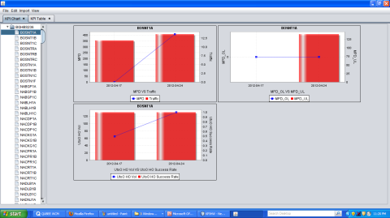
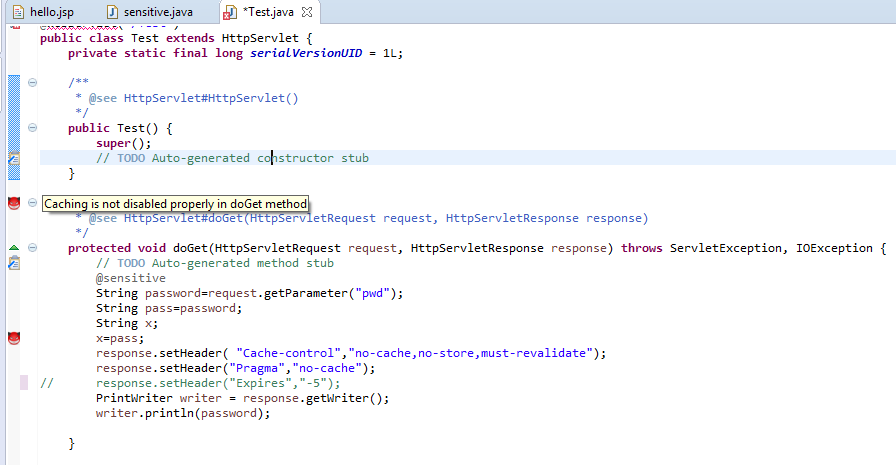
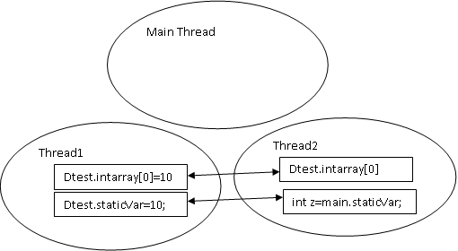
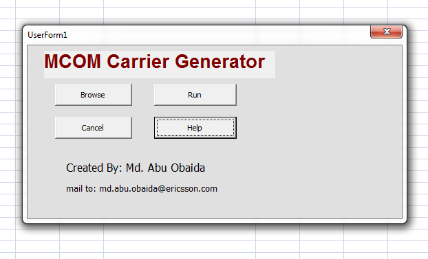

Desktop Software Development
Python Desktop Application: Office Automation
Developed a Python desktop application to automate excel file generation from a particular
template to feed it into another software.
Client Havas Bangladesh, a leading media and digital
marketing agency in Bangladesh.
It saved one day of man hour for Havas and give freedom to two of their employees to enjoy
weekend.
Technology used: Python, Pandas, Tkinter
Java software for Telecom industry
In radio network optimization department engineers need to collect raw data, analyze and prepare report. By this software people can import raw data and report will be calculated and prepared automatically. This can be done both in graphical presentation or tabular presentation.
Interactive Sensitive Data Exposure Detection through Static Analysis
Secure Sensitive Data (SSD) is an Eclipse IDE plugin that provides interactive security suggestions to java developers in real-time through static analysis. Interactive support involves the developer in security based decision making early on in design. GitHub link
Interactive Data Race Checker:IDRC
An Eclipse plugin which can detect potential data race in Java source code. The plugin will is interactive in nature meaning it runs in background and alert user with marker and information for any possible data race while the user writing his code in Eclipse editor. GitHub link
Microsoft Excel, VB application
This macro generates carrier file for the software MCOM from the CDD_dump file collected from Ericsson BSC (Base Station Controller). Carrier file is an integral part of MCOM for frequency planning and optimization.
